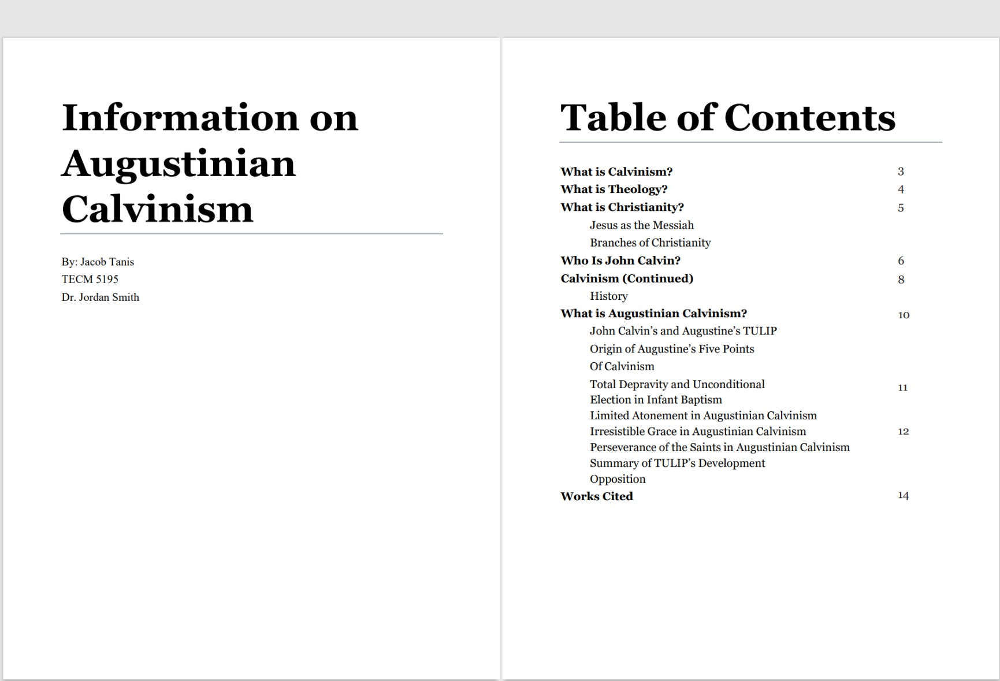
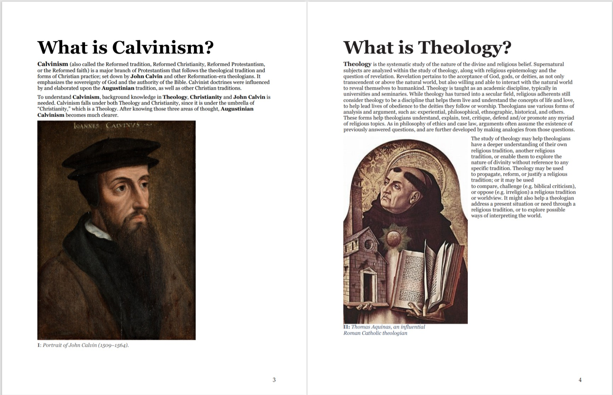

Chicago Manual of Style Document
Situation
In one of my graduate courses, we were assigned to gather information from Wikipedia regarding a certain topic. We then were to edit the text according to the Chicago Manual of Style, and make it into a presentable document for readers to learn from regarding the topic. Photos were also required to be present within the document.
Task
I decided to find Wikipedia pages related to Augustinian Calvinism. This included pages about Calvinism, Theology, Christianity, John Calvin, and Augustinian Calvinism. I also found photos regarding the topic within each respective Wikipedia page.
Action
After gathering the text, I organized the information to give readers context about Augustinian Calvinism. I sectioned each topic with a heading in the form of a question. I did this to help the reader easily find the answers they are interested in. Most of this work was done in Microsoft Word.
I then edited the text according to Chicago Manual of Style, and added photos corresponding to each topic. I also added sub-headers to organize the information in natural way. Lastly, I made an interactive table of contents so that the reader could find what they are looking for and access it immediately. This was done using Adobe Acrobat.
Result
The finished product comprises of an interactive PDF that is visually stimulating as well as informative. It allows readers to swiftly access answers to the questions stated.